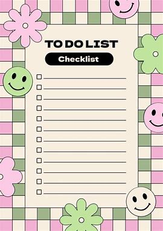
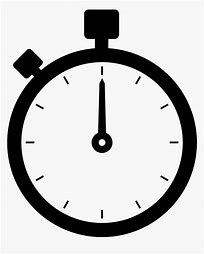

A well-crafted to-do list is a powerful tool for enhancing productivity and managing tasks effectively.
Click here to view project
A simple stopwatch is a basic timekeeping device designed to measure elapsed time with precision.
Click here to view project